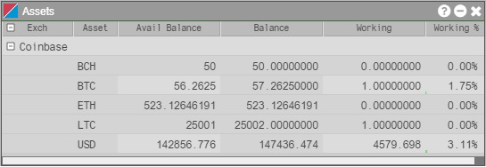

You can view your Coinbase wallet balances using the Assets widget. The widget refreshes your balances automatically within one second of every order action or full or partial fill. Balances are displayed for the following currencies and cryptocurrencies: USD, EUR, GBP, BCH, BTC, ETH, LTC.

The following columns are shown in the Assets widget:
- Exch — Shows the cryptocurrency exchange name.
- Asset — Shows the cryptocurrency or fiat currency name.
- Avail Balance — Displays the balance of an asset available to trade (i.e., Total Balance - Working Quantity).
- Balance — Displays the total balance of an asset retrieved from your exchange account.
- Working — Displays the quantity of your balance still working in the market as open orders.
- Working % — Displays the percentage of your balance still working in the market as open orders, and shows a progress meter at the bottom of each cell.
To open the Assets widget, click Widgets | Miscellaneous in the TT workspace menu bar.